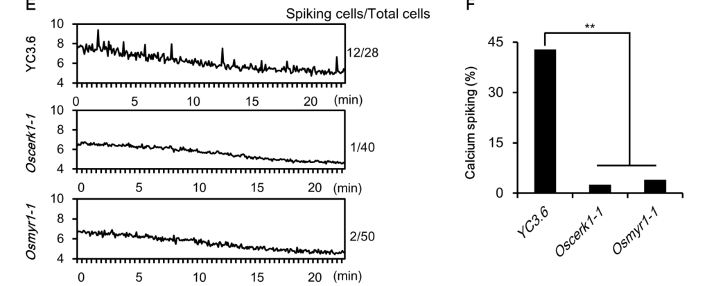

OsCERK1 (chitin elicitor receptor kinase 1; OsLysM-RLK9) is a plasma membrane lysin-motif (LysM) receptor-like kinase of rice with an N-terminal signal peptide, an extracellular region carrying a single recognisable LysM motif, one transmembrane helix and a cytoplasmic serine/threonine protein kinase domain. It is the kinase-bearing signalling partner of LysM receptor proteins that bind microbial ligands, rather than the principal ligand-binding subunit. In chitin-triggered immunity, the GPI-anchored LysM protein OsCEBiP binds fungal chitin oligosaccharides and forms a ligand-induced complex with OsCERK1; OsCERK1 then phosphorylates downstream substrates including the receptor-like cytoplasmic kinase OsRLCK185 (which relays to a MAP kinase cascade) and the Rac GEF OsRacGEF1 (activating the small GTPase OsRac1), leading to ROS production, phytoalexin synthesis, defense gene expression and resistance to the rice blast fungus Magnaporthe oryzae. With the LysM proteins LYP4 and LYP6 it also mediates responses to bacterial peptidoglycan. Independently of OsCEBiP, OsCERK1 is required for arbuscular mycorrhizal symbiosis: the LysM receptor OsMYR1/OsLYK2 binds short-chain chitooligosaccharides (CO4) and recruits kinase-active OsCERK1 into a symbiotic receptor heteromer that activates nuclear calcium oscillations and fungal colonisation. OsMYR1 and OsCEBiP compete for OsCERK1, helping to discriminate symbiotic from immune signals. In the resting state the U-box E3 ligase OsCIE1 ubiquitinates OsCERK1 and restrains its kinase activity; chitin-activated OsCERK1 phosphorylates OsCIE1 to release this brake.
| GO Term | Evidence | Action | Reason |
|---|---|---|---|
|
GO:0002752
cell surface pattern recognition receptor signaling pathway
|
IBA
GO_REF:0000033 |
ACCEPT |
Summary: Phylogenetic inference placing OsCERK1 in cell-surface PRR signalling, as for Arabidopsis CERK1. Strongly consistent with rice data: OsCERK1 is the kinase component of the OsCEBiP-OsCERK1 chitin receptor complex and of the LYP4/LYP6-OsCERK1 peptidoglycan receptor system, and directly phosphorylates the immediate downstream RLCK OsRLCK185.
Reason: Chitin and peptidoglycan are PAMPs; OsCERK1 is the transmembrane kinase that transduces their perception across the plasma membrane. This is the appropriately specific immune signalling term and is a core immune role. It describes the immune role only; the symbiotic role is captured separately (GO:0036377).
Supporting Evidence:
PMID:21070404
Knockdown of OsCERK1 resulted in marked suppression of the defense responses induced by chitin oligosaccharides, indicating that OsCERK1 is essential for chitin signaling in rice.
PMID:23498959
In response to chitin, OsRLCK185 associates with, and is directly phosphorylated by, OsCERK1 at the plasma membrane.
PMID:25335639
OsCERK1 is essential for both PGN and chitin signaling initiated by OsLYP4 and OsLYP6
|
|
GO:0002768
immune response-regulating cell surface receptor signaling pathway
|
EXP
PMID:23498959 A receptor-like cytoplasmic kinase targeted by a plant patho... |
MODIFY |
Summary: PHI-base annotation from the OsRLCK185 study, in which chitin-activated OsCERK1 directly phosphorylates OsRLCK185 to engage MAP kinase activation and immune responses.
Reason: Correct but less specific than warranted. The ligands (chitin, peptidoglycan) are PAMPs perceived at the cell surface, so the is_a child cell surface pattern recognition receptor signaling pathway (GO:0002752), already supported here by IBA, is the more informative term.
Proposed replacements:
cell surface pattern recognition receptor signaling pathway
Supporting Evidence:
PMID:23498959
Chitin recognition by OsCERK1 triggers rapid engagement of a rice MAP kinase cascade, which leads to defense response activation.
|
|
GO:0004672
protein kinase activity
|
IEA
GO_REF:0000002 |
ACCEPT |
Summary: InterPro-based kinase annotation. OsCERK1 has an active cytoplasmic kinase domain that autophosphorylates and phosphorylates OsRLCK185, OsRacGEF1, OsMYR1 and OsCIE1.
Reason: Correct; the more specific serine/threonine kinase terms are also present. Retained as a correct, non-misleading parent.
Supporting Evidence:
PMID:21070404
OsCERK1 is a plasma membrane protein containing one LysM motif in the extracellular domain and an intracellular Ser/Thr kinase domain.
|
|
GO:0004674
protein serine/threonine kinase activity
|
IBA
GO_REF:0000033 |
ACCEPT |
Summary: Phylogenetic inference of Ser/Thr kinase activity, matching direct rice evidence: OsCERK1 phosphorylates OsRacGEF1 on Ser549 and phosphorylates OsRLCK185 and OsCIE1.
Reason: Core molecular function, inherited across the CERK1/LYK clade and experimentally verified for the rice protein.
Supporting Evidence:
PMID:23601108
is activated when its C-terminal S549 is phosphorylated by the cytoplasmic domain of OsCERK1 in response to chitin
file:ORYSJ/CERK1/CERK1-deep-research-falcon.md
Purified OsCERK1 kinase domain autophosphorylated and phosphorylated OsMYR1 and the assay substrate myelin basic protein
|
|
GO:0004674
protein serine/threonine kinase activity
|
IEA
GO_REF:0000003 |
ACCEPT |
Summary: EC 2.7.11.1 mapping; UniProt assigns this EC from experimental data (PMID:23498959).
Reason: Correct and consistent with the experimental and IBA annotations.
Supporting Evidence:
PMID:23601108
is activated when its C-terminal S549 is phosphorylated by the cytoplasmic domain of OsCERK1 in response to chitin
|
|
GO:0005524
ATP binding
|
IEA
GO_REF:0000002 |
ACCEPT |
Summary: InterPro-based ATP binding from the protein kinase ATP-binding site signature; OsCERK1 is a catalytically active kinase.
Reason: Correct consequence of an active protein kinase domain; not informative beyond the kinase activity terms but not wrong.
Supporting Evidence:
file:ORYSJ/CERK1/CERK1-deep-research-falcon.md
Purified OsCERK1 kinase domain autophosphorylated and phosphorylated OsMYR1 and the assay substrate myelin basic protein
|
|
GO:0005886
plasma membrane
|
EXP
PMID:24964058 Targeted gene disruption of OsCERK1 reveals its indispensabl... |
ACCEPT |
Summary: UniProt annotation from the OsCERK1 gene-targeting study, which localised GFP-tagged OsCERK1 at the cell periphery around invading blast-fungus hyphae.
Reason: OsCERK1 is a single-pass transmembrane receptor kinase acting at the plasma membrane; consistent with multiple independent studies.
Supporting Evidence:
PMID:24964058
Green fluorescent protein-tagged OsCERK1 was localized around the primary infection hyphae.
|
|
GO:0005886
plasma membrane
|
EXP
PMID:25335639 OsCERK1 and OsRLCK176 play important roles in peptidoglycan ... |
ACCEPT |
Summary: UniProt annotation from the OsCERK1/OsRLCK176 study describing OsCERK1 as a plasma-membrane adaptor in PGN and chitin signalling with LYP4/LYP6.
Reason: Consistent with the receptor topology and other localisation evidence.
Supporting Evidence:
PMID:25335639
as an adaptor involved in signal transduction at the plasma membrane in conjunction with OsLYP4 and OsLYP6
|
|
GO:0005886
plasma membrane
|
IBA
GO_REF:0000033 |
ACCEPT |
Summary: Phylogenetic inference of plasma membrane localisation; OsCERK1 itself is among the experimental sources for this node.
Reason: Correct; the target's own experimental localisation grounds the IBA.
Supporting Evidence:
PMID:23601108
OsCEBiP, a chitin-binding protein, and OsCERK1, a receptor-like kinase, are plasma membrane (PM) proteins
|
|
GO:0005886
plasma membrane
|
IDA
PMID:23498959 A receptor-like cytoplasmic kinase targeted by a plant patho... |
ACCEPT |
Summary: PHI-base annotation; the study shows OsCERK1 associating with and phosphorylating OsRLCK185 at the plasma membrane.
Reason: Consistent with topology and other localisation studies.
Supporting Evidence:
PMID:23498959
OsRLCK185 associates with, and is directly phosphorylated by, OsCERK1 at the plasma membrane.
|
|
GO:0005886
plasma membrane
|
IEA
GO_REF:0000044 |
ACCEPT |
Summary: UniProt subcellular-location mapping (Cell membrane).
Reason: Correct and redundant with the experimental annotations.
Supporting Evidence:
PMID:21070404
OsCERK1 is a plasma membrane protein containing one LysM motif in the extracellular domain
|
|
GO:0008061
chitin binding
|
IEA
GO_REF:0000117 |
REMOVE |
Summary: ARBA machine-learning transfer of chitin binding, reflecting the Arabidopsis CERK1 paradigm (whose three-LysM ectodomain binds chitin). In rice the chitin-binding subunit is OsCEBiP; OsCERK1 has a single recognisable LysM, chitin binding to rice membranes is unaffected by OsCERK1 knockdown, and the OsCERK1 ectodomain did not bind chitin in direct assays.
Reason: The rice receptor system divides ligand binding (OsCEBiP; OsMYR1 for CO4) from kinase signalling (OsCERK1). Transferring direct chitin binding from AtCERK1 to OsCERK1 is a paralog/ortholog-function leak not supported by rice biochemistry.
Supporting Evidence:
PMID:21070404
the observed binding of a biotinylated chitin oligosaccharide, GN8-Bio (Shinya et al., 2010), to the microsomal membrane was not affected by knockdown of OsCERK1, confirming the previous finding that CEBiP is the major molecule that binds chitin oligosaccharides on the cell surface
PMID:21070404
it does appear that CEBiP plays a major role in chitin elicitor binding and that OsCERK1 functions as a signal transducer through its Ser/Thr kinase activity in rice
file:ORYSJ/CERK1/CERK1-deep-research-falcon.md
in the tested colloidal-chitin assay, the rice OsCERK1 ectodomain did not bind, whereas partner receptors provide directly demonstrated ligand binding
|
|
GO:0008061
chitin binding
|
TAS
PMID:23498959 A receptor-like cytoplasmic kinase targeted by a plant patho... |
REMOVE |
Summary: PHI-base traceable author statement. The cited paper studies OsRLCK185 phosphorylation and does not test OsCERK1 chitin binding; its general statement that CERK1 is a LysM PRR for chitin derives from the Arabidopsis protein.
Reason: Not an experimental annotation, and the rice data argue against OsCERK1 being the chitin-binding subunit (see the ARBA row). The chitin-binding function belongs to OsCEBiP.
Supporting Evidence:
PMID:21070404
Concerning the question of whether OsCERK1 directly binds chitin oligosaccharides or not, we have not been able to show binding of radioactive or biotinylated chitin oligosaccharide derivatives to the expected band for OsCERK1
PMID:22891159
Studies of the chitin binding properties of the ectodomains of At/OsCERK1 and the chimeric receptors consisting of ecto/cytosolic domains of these molecules indicated that AtCERK1 is sufficient for chitin perception by itself.
|
|
GO:0019199
transmembrane receptor protein kinase activity
|
IBA
GO_REF:0000033 |
ACCEPT |
Summary: Phylogenetic inference of transmembrane receptor kinase activity. OsCERK1 is a single-pass LysM receptor kinase that transmits ligand-induced complex formation (with OsCEBiP, LYP4/LYP6 or OsMYR1) across the membrane by phosphorylating cytoplasmic substrates.
Reason: Best general description of OsCERK1's molecular function as the signal-transducing (co-receptor) kinase in heteromeric LysM receptor complexes, in both immunity and symbiosis.
Supporting Evidence:
PMID:21070404
Immunoprecipitation using a membrane preparation from rice cells treated with chitin oligosaccharides suggested the ligand-induced formation of a receptor complex containing both CEBiP and OsCERK1.
PMID:31706032
CO4 directly binds to OsMYR1, promoting the dimerization and phosphorylation of this receptor complex.
|
|
GO:0019199
transmembrane receptor protein kinase activity
|
IEA
GO_REF:0000002 |
ACCEPT |
Summary: InterPro (CERK1/LYK3-like) mapping to transmembrane receptor protein kinase activity.
Reason: Correct; consistent with IBA and experimental data.
Supporting Evidence:
file:ORYSJ/CERK1/CERK1-deep-research-falcon.md
its LysM-containing region faces the extracellular space and its catalytic domain faces the cytoplasm
|
|
GO:0038187
pattern recognition receptor activity
|
EXP
PMID:23498959 A receptor-like cytoplasmic kinase targeted by a plant patho... |
MODIFY |
Summary: PHI-base annotation. The term definition requires combining with the PAMP. In rice the chitin-binding PRR is OsCEBiP and the PGN-binding PRRs are LYP4/LYP6; OsCERK1 is the co-receptor kinase that transduces the signal. The cited abstract does not report OsCERK1 binding chitin.
Reason: The essence (OsCERK1 is a receptor-complex component in PAMP signalling) is sound, but the term implies direct PAMP recognition, which belongs to OsCEBiP/LYP4/LYP6. Transmembrane receptor protein kinase activity captures what OsCERK1 contributes; coreceptor activity (GO:0015026) would also be an accurate description.
Proposed replacements:
transmembrane receptor protein kinase activity
Supporting Evidence:
PMID:21070404
it does appear that CEBiP plays a major role in chitin elicitor binding and that OsCERK1 functions as a signal transducer through its Ser/Thr kinase activity in rice
PMID:25335639
These membrane receptors, which lack intracellular kinase domains, likely contain another component for transmembrane immune signal transduction.
|
|
GO:0045087
innate immune response
|
IBA
GO_REF:0000033 |
ACCEPT |
Summary: Phylogenetic inference of innate immunity. OsCERK1 knockout abolishes chitin-induced H2O2 and gene expression and increases blast hyphal growth.
Reason: Well supported in rice; broader than GO:0002752 but a legitimate immune process annotation.
Supporting Evidence:
PMID:24964058
These results demonstrate that OsCERK1 is indispensable for chitin perception and participates in innate immunity in rice, and also mediates the peptidoglycan response.
|
|
GO:0045087
innate immune response
|
IEA
GO_REF:0000002 |
ACCEPT |
Summary: InterPro (CERK1/LYK3-like) mapping to innate immune response.
Reason: Correct for OsCERK1, although note that this InterPro family also includes symbiosis-specialised members (e.g. legume LYK3/NFR1), so the mapping is not universally safe across the family.
Supporting Evidence:
PMID:24964058
These results demonstrate that OsCERK1 is indispensable for chitin perception and participates in innate immunity in rice
|
|
GO:0106310
protein serine kinase activity
|
EXP
PMID:23498959 A receptor-like cytoplasmic kinase targeted by a plant patho... |
ACCEPT |
Summary: UniProt/PHI-base annotation from in vitro phosphorylation of OsRLCK185 by OsCERK1 (UniProt EC 2.7.11.1 with Ser and Thr reactions).
Reason: Direct experimental support for OsCERK1 phosphorylating protein substrates.
Supporting Evidence:
PMID:23498959
In response to chitin, OsRLCK185 associates with, and is directly phosphorylated by, OsCERK1 at the plasma membrane.
|
|
GO:0106310
protein serine kinase activity
|
IEA
GO_REF:0000116 |
ACCEPT |
Summary: Rhea-based mapping from the UniProt catalytic activity (L-seryl-[protein] phosphorylation).
Reason: Correct; redundant with the experimental annotation.
Supporting Evidence:
PMID:23601108
is activated when its C-terminal S549 is phosphorylated by the cytoplasmic domain of OsCERK1 in response to chitin
|
|
GO:0036377
arbuscular mycorrhizal association
|
IMP
PMID:25231970 The bifunctional plant receptor, OsCERK1, regulates both chi... |
NEW |
Summary: OsCERK1 knockout mutants are impaired in arbuscular mycorrhizal colonisation, independently of OsCEBiP and chitin immunity. OsCERK1 is the active kinase of the OsMYR1-OsCERK1 Myc-factor receptor heteromer: CO4 bound by OsMYR1 promotes complex formation and phosphorylation, and kinase-dead OsCERK1 fails to rescue colonisation.
Reason: No existing annotation records the symbiotic role; all current process terms are immune. Participation test: OsCERK1 performs the catalytic (kinase) step of symbiotic receptor signalling, phosphorylating the kinase-inactive OsMYR1, rather than merely being required. Comparator check (QuickGO): other symbiosis signalling components carry GO:0036377 by IMP, including rice D14L (Q10J20) and rice CYCLOPS (A9XMT5), Medicago CNGC15a/b and CYCLOPS; rice CCaMK carries it in this repository. Kept distinct from the immune terms, which are supported by separate evidence.
Supporting Evidence:
PMID:25231970
OsCERK1 but not chitin-triggered immunity is required for AM symbiosis.
PMID:25399831
this gene is also necessary for the establishment of the mycorrhizal interaction as well as for resistance to the rice blast fungus
PMID:31706032
we identified a heteromer of LysM receptor-like kinases consisting of OsMYR1/OsLYK2 and OsCERK1 that mediates the perception of AM fungi in rice
file:ORYSJ/CERK1/CERK1-deep-research-falcon.md
CO4-bound OsMYR1 recruits kinase-active OsCERK1, promoting receptor phosphorylation
|
Q: Does the OsCERK1 ectodomain bind short chitooligosaccharides (CO4/CO5) or LCOs with measurable affinity in the OsMYR1 or OsCEBiP heteromer context, or is it purely a scaffold for the kinase?
Q: Should GO:0038187 pattern recognition receptor activity be restricted to the ligand-binding subunit of heteromeric PRR complexes, with co-receptor kinases such as OsCERK1 and BAK1 annotated to coreceptor activity (GO:0015026) or transmembrane receptor protein kinase activity instead?
Q: Is OsCERK1 phosphorylation of OsCIE1 relevant to symbiosis as well as immunity, given that Oscie1 mutants show reduced mycorrhizal colonisation?
Experiment: Quantitative binding (ITC/MST) of purified OsCERK1 ectodomain, alone and with OsCEBiP or OsMYR1 ectodomains, to CO4, CO8 and LCOs, to settle whether OsCERK1 contributes directly to ligand recognition.
Experiment: Phosphoproteomics of roots expressing wild-type vs kinase-dead (T484A) OsCERK1 after CO4 vs CO8 treatment, to identify branch-specific substrates linking OsCERK1 to symbiotic versus immune outputs.
The research report should be a detailed narrative explaining the function, biological processes, and localization of the gene product. Citations should be given for all claims.
You should prioritize authoritative reviews and primary scientific literature when conducting research. You can supplement
this with annotations you find in gene/protein databases, but these can be outdated or inaccurate.
We are specifically interested in the primary function of the gene - for enzymes, what reaction is catalyzed, and what is the substrate specificity? For transporters, what is the substrate? For structural proteins or adapters, what is the broader structural role? For signaling molecules, what is the role in the pathway.
We are interested in where in or outside the cell the gene product carries out its function.
We are also interested in the signaling or biochemical pathways in which the gene functions. We are less interested in broad pleiotropic effects, except where these elucidate the precise role.
Include evidence where possible. We are interested in both experimental evidence as well as inference from structure, evolution, or bioinformatic analysis. Precise studies should be prioritized over high-throughput, where available.
The target is the japonica rice protein OsCERK1, UniProt A0A0P0XII1, encoded by CERK1/OsLysM-RLK9 (the supplied record also lists Os08g0538300 and LOC_Os08g42580). This assignment matches the rice protein called OsLysM-RLK9 in the original characterization; it is not Arabidopsis CERK1, whose chitin-binding behavior differs. The experimentally characterized rice protein has 624 amino acids, an N-terminal signal peptide, an extracellular LysM-containing region, one transmembrane segment and an intracellular serine/threonine kinase domain. Motif analysis identified one recognizable extracellular LysM motif in rice OsCERK1, versus three in the Arabidopsis protein. The locus identifiers above come from the UniProt information supplied with the question; the cited characterization independently establishes the OsLysM-RLK9/OsCERK1 name and protein architecture. (shimizu2010twolysmreceptor pages 1-2, shimizu2010twolysmreceptor pages 2-3, shinya2012functionalcharacterizationof pages 3-4)
Primary annotation: OsCERK1 is a plasma-membrane receptor-like kinase and shared signaling component of two rice pathways: chitin-triggered innate immunity and perception of arbuscular-mycorrhizal fungal signals. Its main biochemical activity is transfer of phosphate from ATP to protein substrates, including OsRacGEF1, OsRLCK185, OsMYR1 and OsCIE1; it also autophosphorylates. It is not a chitin-degrading enzyme or a transporter. Nor should its participation in chitin perception be equated with proven high-affinity direct chitin binding: in the tested colloidal-chitin assay, the rice OsCERK1 ectodomain did not bind, whereas partner receptors provide directly demonstrated ligand binding. Detailed catalytic constants or a complete physiological substrate repertoire have not been established by the studies examined. (shinya2012functionalcharacterizationof pages 3-4, he2019alysmreceptor pages 7-10, akamatsu2013anoscebiposcerk1osracgef1osrac1module pages 1-2, yamaguchi2013areceptorlikecytoplasmic pages 1-2, wang2024releaseofa pages 4-5)
OsCERK1 spans the plasma membrane: its LysM-containing region faces the extracellular space and its catalytic domain faces the cytoplasm. Rice root epidermal and cortical expression, plasma-membrane localization and membrane-localized interaction with OsMYR1 support its role at the plant–microbe interface; plasma-membrane experiments also place its immune signaling partners there. Evidence that an OsCERK1–OsRacGEF1 complex traffics from the endoplasmic reticulum to the plasma membrane describes receptor delivery, not the ER as its principal signaling site. (shimizu2010twolysmreceptor pages 2-3, he2019alysmreceptor pages 7-10, akamatsu2013anoscebiposcerk1osracgef1osrac1module pages 2-3, akamatsu2013anoscebiposcerk1osracgef1osrac1module pages 1-2)
In the immune complex, extracellular fungal chitin fragments—particularly longer chitooligosaccharides such as the eight-residue CO8, or (GlcNAc)₈—are bound principally by OsCEBiP. Chitin-oligosaccharide treatment promotes formation of an OsCEBiP–OsCERK1 membrane complex. Binding of labeled chitin oligomer to rice membranes persisted after OsCERK1 knockdown, while an isolated OsCERK1 ectodomain failed to bind colloidal chitin under the conditions tested. These are stronger grounds for annotating OsCERK1 as the kinase-bearing signaling partner than as a directly proven high-affinity CO8-binding protein. A negative result in that assay does not exclude every possible weak or context-dependent interaction. Rice and Arabidopsis results must not be interchanged: the latter protein's direct chitin binding does not establish the same property for OsCERK1. (shimizu2010twolysmreceptor pages 1-2, shimizu2010twolysmreceptor pages 3-4, shinya2012functionalcharacterizationof pages 3-4, shinya2012functionalcharacterizationof pages 5-7)
In the symbiotic complex, OsMYR1/OsLYK2 directly recognizes the short fungal chitooligosaccharide CO4 (chitotetraose). Its purified ectodomain bound CO4 with a measured Kᵈ of 89 ± 44.9 nM; CO4 increased OsMYR1–OsCERK1 association approximately twofold. OsMYR1 also interacted with long-chain chitin beads, with CO4 and CO8 competing for that association. Thus, CO length helps bias the response, but CO4-versus-CO8 sensing is not an absolute, one-ligand/one-receptor rule. The quoted affinity is for OsMYR1, not OsCERK1, and should not be assigned to the target kinase. (he2019alysmreceptor pages 7-10, zhang2021discriminatingsymbiosisand pages 1-2)
The supported reaction class is ATP-dependent phosphorylation of a protein serine or threonine residue: protein–OH + ATP → protein–O–phosphate + ADP. This formulation specifies OsCERK1's phosphotransfer role, not specificity for one small-molecule substrate. Purified OsCERK1 kinase domain autophosphorylated and phosphorylated OsMYR1 and the assay substrate myelin basic protein; the OsCERK1 T484A activation-loop variant lacked detectable kinase activity in vitro. OsMYR1 did not show comparable intrinsic kinase activity, helping explain why the ligand-binding symbiotic receptor recruits OsCERK1. CO4 enhanced phosphorylation of the receptor pair in cells and transgenic rice. (he2019alysmreceptor pages 7-10)
Several protein substrates and downstream branches have more precise experimental support:
The following table consolidates the rice-specific ligand, localization, phosphorylation and perturbation evidence; it separates what binds extracellular ligand from what catalyzes intracellular signaling. (shimizu2010twolysmreceptor pages 2-3, he2019alysmreceptor pages 7-10)
| Mode / partner | Ligand or substrate | Direct rice-specific evidence / readout | Key study, date, DOI / URL |
|---|---|---|---|
| Receptor topology and localization | — | OsCERK1 is a 624-aa, single-pass receptor-like kinase with an N-terminal signal peptide, extracellular LysM-containing region, transmembrane helix and intracellular Ser/Thr kinase domain. It is expressed broadly and localizes to the plasma membrane, including root epidermal and cortical cells. (shimizu2010twolysmreceptor pages 2-3, he2019alysmreceptor pages 7-10) | Shimizu et al., Sep 2010, 10.1111/j.1365-313X.2010.04324.x; He et al., Dec 2019, 10.1016/j.molp.2019.10.015 |
| Immunity: OsCEBiP–OsCERK1 | Long-chain chitin oligosaccharides, especially CO8 / (GlcNAc)₈ | OsCEBiP is the principal ligand-binding component; ligand treatment promotes an OsCEBiP–OsCERK1 complex. OsCERK1 knockdown markedly reduced biphasic ROS, phytoalexins and defense transcription: about 85% of normally upregulated and 98% of downregulated elicitor-responsive genes lost responsiveness. Importantly, the isolated OsCERK1 ectodomain did not bind colloidal chitin in the 2012 assay. (shimizu2010twolysmreceptor pages 1-2, shimizu2010twolysmreceptor pages 2-3, shinya2012functionalcharacterizationof pages 3-4, shinya2012functionalcharacterizationof pages 5-7, shimizu2010twolysmreceptor pages 3-4) | Shimizu et al., Sep 2010, 10.1111/j.1365-313X.2010.04324.x; Shinya et al., Oct 2012, 10.1093/pcp/pcs113 |
| Mycorrhiza: OsMYR1/OsLYK2–OsCERK1 | CO4 (chitotetraose); OsMYR1 also recognizes CO8 | OsMYR1 directly bound CO4 with Kᵈ = 89 ± 44.9 nM; CO4 increased OsMYR1–OsCERK1 association about twofold and enhanced receptor phosphorylation. CO4 induced nuclear Ca²⁺ oscillations in 42.8% of wild-type atrichoblasts versus 2.5% in Oscerk1-1 and 4% in Osmyr1-1. Kinase-dead OsCERK1-T484A failed to rescue mycorrhizal colonization. (he2019alysmreceptor pages 7-10, he2019alysmreceptor media 9c58ef8b) | He et al., Dec 2019, 10.1016/j.molp.2019.10.015 |
| Kinase substrate: OsRacGEF1 | OsRacGEF1 Ser549 | OsCERK1’s cytoplasmic domain phosphorylated OsRacGEF1 at Ser549, activating the GEF–OsRac1 branch at the plasma membrane; chitin-triggered OsRac1 activity was followed by a FRET biosensor at three-minute intervals. (akamatsu2013anoscebiposcerk1osracgef1osrac1module pages 1-2, akamatsu2013anoscebiposcerk1osracgef1osrac1module pages 2-3) | Akamatsu et al., Apr 2013, 10.1016/j.chom.2013.03.007 |
| Kinase substrate: OsRLCK185 | OsRLCK185 | Association and in-vitro kinase assays showed direct OsCERK1-dependent phosphorylation of OsRLCK185 at the plasma membrane. Silencing OsRLCK185 impaired chitin- and peptidoglycan-induced MAPK activation and defense-gene expression; OsRLCK185 relays signaling through OsMAPKKKε–OsMKK4–OsMPK3/6. (yamaguchi2013areceptorlikecytoplasmic pages 1-2, wang2017oscerk1mediatedchitinperception pages 1-5, wang2017oscerk1mediatedchitinperception pages 5-9) | Yamaguchi et al., Mar 2013, 10.1016/j.chom.2013.02.007; Wang et al., Apr 2017, 10.1016/j.molp.2017.01.006 |
| Kinase substrate: OsMYR1 | Kinase-inactive OsMYR1 intracellular domain | Purified OsCERK1 kinase phosphorylated itself, myelin basic protein and OsMYR1; OsMYR1 lacked detectable intrinsic kinase activity. CO4 enhanced phosphorylation of both receptors in protoplasts and transgenic rice. (he2019alysmreceptor pages 7-10) | He et al., Dec 2019, 10.1016/j.molp.2019.10.015 |
| Kinase substrate: OsCIE1 | OsCIE1 Thr206, Thr215, Thr216 and Ser237; principal regulatory site Ser237 | Chitin-activated OsCERK1 phosphorylates the U-box E3 ligase OsCIE1. Ser237 phosphorylation weakens OsCIE1–OsUBC8 association and suppresses E3 activity, releasing inhibition of OsCERK1. Phosphomimetic S237D showed reduced ubiquitination activity and failed to restore normal blast susceptibility fully. (wang2024releaseofa pages 4-5, wang2024releaseofa pages 5-6) | Wang et al., May 2024, 10.1038/s41586-024-07418-9 |
| Basal ubiquitin brake: OsCIE1→OsCERK1 | OsCERK1 Lys329, Lys347, Lys352, Lys445, Lys453, Lys458, Lys548, Lys558, Lys570 and Lys584 | In resting cells, OsCIE1 polyubiquitinates OsCERK1 at ten mapped lysines and inhibits kinase activity without promoting proteasomal degradation. Oscie1 mutants had stronger chitin-induced ROS and resistance to Magnaporthe oryzae and Xanthomonas oryzae, but reduced seed setting, grain yield and mycorrhizal colonization; double-mutant evidence showed substantial OsCERK1 dependence. (wang2024releaseofa pages 4-5, wang2024releaseofa pages 2-3, wang2024releaseofa pages 1-2) | Wang et al., May 2024, 10.1038/s41586-024-07418-9 |
| Experimental application: chitin-induced systemic resistance | Soil-applied chitin oligomers (DP2–6) or chitin nanofiber at 0.01–0.1% | Both preparations induced systemic resistance to Bipolaris oryzae and altered leaf cell-wall biogenesis; disruption of either OsCERK1 or OsCEBiP compromised the response. This was a controlled rice experiment, not yet evidence of routine field deployment. (takagi2022chitininducedsystemicdisease pages 1-2, takagi2022chitininducedsystemicdisease pages 2-3, takagi2022chitininducedsystemicdisease pages 11-12) | Takagi et al., Nov 2022, 10.3389/fpls.2022.1064628 |
| Experimental application: receptor competition | CO4 versus CO8 | OsMYR1–CO4 competes with OsCEBiP for OsCERK1, suppressing OsCERK1 homodimerization and OsGEF1 phosphorylation; conversely, OsCEBiP limits the symbiotic receptor complex. Osmyr1 mutants were more blast-resistant in roots, whereas early AM colonization increased in Oscebip. (zhang2021discriminatingsymbiosisand pages 1-2, zhang2021discriminatingsymbiosisand pages 2-3, zhang2021discriminatingsymbiosisand pages 4-5, zhang2021discriminatingsymbiosisand pages 3-4) | Zhang et al., Apr 2021, 10.1073/pnas.2023738118 |
Table: Rice-specific evidence distinguishes OsCERK1’s kinase/coreceptor function from direct ligand binding and summarizes its immune, mycorrhizal and ubiquitin-regulatory mechanisms. Quantitative findings and practical experiments are linked to primary studies.
Receptor competition provides an experimentally supported explanation for how one kinase can participate in opposing outcomes. In rice roots, OsMYR1 and OsCEBiP compete for OsCERK1: CO4/OsMYR1 favors the symbiotic receptor complex and reduces formation of the OsCEBiP–OsCERK1 immune complex. OsMYR1 also reduced OsCERK1 self-association and inhibited OsCERK1 autophosphorylation and phosphorylation of OsGEF1/OsRacGEF1 in vitro. Importantly, under the tested conditions it did not prevent phosphorylation of OsRLCK185; the competition model is therefore more nuanced than global shutdown of all OsCERK1 catalysis. Conversely, OsCEBiP impeded OsMYR1–OsCERK1 association. Osmyr1 mutants were more resistant to root infection by the rice-blast fungus Magnaporthe oryzae, whereas Oscebip showed increased early, but not persistently increased, arbuscular-mycorrhizal colonization. These results identify receptor-partner availability, ligand context and tissue as determinants of output. (zhang2021discriminatingsymbiosisand pages 1-2, zhang2021discriminatingsymbiosisand pages 2-3, zhang2021discriminatingsymbiosisand pages 4-5, zhang2021discriminatingsymbiosisand pages 5-6)
A May 2024 Nature primary study identified OsCIE1, a U-box E3 ubiquitin ligase, as a negative regulator of OsCERK1. In the basal state OsCIE1 ubiquitinates OsCERK1 and restrains its kinase activity without primarily driving proteasomal receptor degradation. Mass spectrometry identified ten modified OsCERK1 lysines: K329, K347, K352, K445, K453, K458, K548, K558, K570 and K584. Upon chitin activation, OsCERK1 phosphorylates OsCIE1 at several mapped positions, including the key Ser237 within its U-box region. This weakens recruitment of the E2 enzyme OsUBC8, suppresses OsCIE1's ubiquitin-ligase activity and releases the brake on immune signaling. Phosphorylation-mimicking OsCIE1 mutants supported that direction of causality. (wang2024releaseofa pages 4-5, wang2024releaseofa pages 2-3, wang2024releaseofa pages 5-6)
The genetic results expose an application-relevant constraint: Oscie1 mutants displayed stronger chitin-induced reactive-oxygen responses and increased resistance to M. oryzae and bacterial blight agent Xanthomonas oryzae pv. oryzae, but lower seed setting and grain yield, as well as reduced mycorrhizal colonization. Double-mutant evidence showed that much of this phenotype depends on OsCERK1. Consequently, simply maximizing OsCERK1 signaling is not a demonstrated yield-neutral crop-improvement strategy. (wang2024releaseofa pages 2-3, wang2024releaseofa pages 1-2)
Chitin treatment illustrates potential use of this receptor pathway rather than established routine deployment. In a November 2022 rice experiment, soil amended with chitin oligomers or chitin nanofibers at 0.01–0.1% induced systemic resistance in leaves to Bipolaris oryzae; disruption of either OsCERK1 or OsCEBiP compromised the effect. Leaf transcriptomic, cytokinin and cell-wall analyses implicated altered cell-wall biogenesis, but the root-to-leaf signal and direct perception of nanofibers were not identified. Thus the study supports an experimental elicitor strategy, not a defined OsCERK1-mediated nanofiber-binding reaction or proven field-level benefit. (takagi2022chitininducedsystemicdisease pages 1-2, takagi2022chitininducedsystemicdisease pages 2-3, takagi2022chitininducedsystemicdisease pages 11-12, takagi2022chitininducedsystemicdisease pages 5-6)
Breeding and mycorrhiza management require cultivar-specific evaluation. A September 2024 review discusses naturally varying OsCERK1 alleles associated with mycorrhizal performance and blast resistance and notes that an additional proposed LCO receptor, OsLYK11, is present in one examined rice genotype but absent from the examined japonica genome. OsLYK11 is another gene, not an alternative name for the japonica OsCERK1 studied here; differences among cultivars and ligand classes prevent assuming that all rice lines share the same symbiotic receptor complement. A contemporaneous 2024 preprint investigated other LysM-receptor groups across plants, but its non-OsCERK1 ligand-binding measurements should not be substituted for measurements on this protein. These findings motivate receptor-allele and agronomic testing rather than establish an implemented OsCERK1-based cultivar improvement for this UniProt entry. (he2024agapin pages 2-3, ding2024anewgroup pages 1-4)
Overall assessment. The strongest functional annotation is a plasma-membrane, ATP-dependent LysM receptor-like protein kinase that transduces chitin-associated immune signals with OsCEBiP and CO4-associated mycorrhizal signals with OsMYR1. Direct rice experiments establish receptor-partner interactions, defined phosphorylation events, loss-of-function phenotypes and the 2024 OsCIE1 regulatory mechanism. Precise ligand affinity for OsCERK1 itself, full substrate-site specificity, how nuclear calcium signaling is coupled molecularly to this kinase, and yield-neutral manipulation of its immune–symbiotic balance remain insufficiently resolved. (shimizu2010twolysmreceptor pages 1-2, shinya2012functionalcharacterizationof pages 3-4, he2019alysmreceptor pages 7-10, wang2024releaseofa pages 4-5, wang2024releaseofa pages 2-3)
References
(shimizu2010twolysmreceptor pages 1-2): Takeo Shimizu, Takuto Nakano, Daisuke Takamizawa, Yoshitake Desaki, Naoko Ishii-Minami, Yoko Nishizawa, Eiichi Minami, Kazunori Okada, Hisakazu Yamane, Hanae Kaku, and Naoto Shibuya. Two lysm receptor molecules, cebip and oscerk1, cooperatively regulate chitin elicitor signaling in rice. The Plant Journal, 64:204-214, Sep 2010. URL: https://doi.org/10.1111/j.1365-313x.2010.04324.x, doi:10.1111/j.1365-313x.2010.04324.x. This article has 893 citations.
(shimizu2010twolysmreceptor pages 2-3): Takeo Shimizu, Takuto Nakano, Daisuke Takamizawa, Yoshitake Desaki, Naoko Ishii-Minami, Yoko Nishizawa, Eiichi Minami, Kazunori Okada, Hisakazu Yamane, Hanae Kaku, and Naoto Shibuya. Two lysm receptor molecules, cebip and oscerk1, cooperatively regulate chitin elicitor signaling in rice. The Plant Journal, 64:204-214, Sep 2010. URL: https://doi.org/10.1111/j.1365-313x.2010.04324.x, doi:10.1111/j.1365-313x.2010.04324.x. This article has 893 citations.
(shinya2012functionalcharacterizationof pages 3-4): Tomonori Shinya, Noriko Motoyama, Asahi Ikeda, Miyuki Wada, Kota Kamiya, Masahiro Hayafune, Hanae Kaku, and Naoto Shibuya. Functional characterization of cebip and cerk1 homologs in arabidopsis and rice reveals the presence of different chitin receptor systems in plants. Plant & cell physiology, 53 10:1696-706, Oct 2012. URL: https://doi.org/10.1093/pcp/pcs113, doi:10.1093/pcp/pcs113. This article has 242 citations and is from a domain leading peer-reviewed journal.
(he2019alysmreceptor pages 7-10): Jiangman He, Chi Zhang, Huiling Dai, Huan Liu, Xiaowei Zhang, Jun Yang, Xi Chen, Yayun Zhu, Dapeng Wang, Xiaofeng Qi, Weichao Li, Zhihui Wang, Guoyong An, Nan Yu, Zuhua He, Yong-Fei Wang, Youli Xiao, Peng Zhang, and Ertao Wang. A lysm receptor heteromer mediates perception of arbuscular mycorrhizal symbiotic signal in rice. Molecular Plant, 12:1561-1576, Dec 2019. URL: https://doi.org/10.1016/j.molp.2019.10.015, doi:10.1016/j.molp.2019.10.015. This article has 207 citations and is from a highest quality peer-reviewed journal.
(akamatsu2013anoscebiposcerk1osracgef1osrac1module pages 1-2): Akira Akamatsu, Hann Lin Wong, Masayuki Fujiwara, Jun Okuda, Keita Nishide, Kazumi Uno, Keiko Imai, Kenji Umemura, Tsutomu Kawasaki, Yoji Kawano, and Ko Shimamoto. An oscebip/oscerk1-osracgef1-osrac1 module is an essential early component of chitin-induced rice immunity. Cell host & microbe, 13 4:465-76, Apr 2013. URL: https://doi.org/10.1016/j.chom.2013.03.007, doi:10.1016/j.chom.2013.03.007. This article has 299 citations and is from a highest quality peer-reviewed journal.
(yamaguchi2013areceptorlikecytoplasmic pages 1-2): Koji Yamaguchi, Kenta Yamada, Kazuya Ishikawa, Satomi Yoshimura, Nagao Hayashi, Kouhei Uchihashi, Nobuaki Ishihama, Mitsuko Kishi-Kaboshi, Akira Takahashi, Seiji Tsuge, Hirokazu Ochiai, Yasuomi Tada, Ko Shimamoto, Hirofumi Yoshioka, and Tsutomu Kawasaki. A receptor-like cytoplasmic kinase targeted by a plant pathogen effector is directly phosphorylated by the chitin receptor and mediates rice immunity. Cell host & microbe, 13 3:347-57, Mar 2013. URL: https://doi.org/10.1016/j.chom.2013.02.007, doi:10.1016/j.chom.2013.02.007. This article has 329 citations and is from a highest quality peer-reviewed journal.
(wang2024releaseofa pages 4-5): Gang Wang, Xi Chen, Chengzhi Yu, Xiaobao Shi, Wenxian Lan, Chaofeng Gao, Jun Yang, Huiling Dai, Xiaowei Zhang, Huili Zhang, Boyu Zhao, Qi Xie, Nan Yu, Zuhua He, Yu Zhang, and Ertao Wang. Release of a ubiquitin brake activates oscerk1-triggered immunity in rice. Nature, May 2024. URL: https://doi.org/10.1038/s41586-024-07418-9, doi:10.1038/s41586-024-07418-9. This article has 80 citations and is from a highest quality peer-reviewed journal.
(akamatsu2013anoscebiposcerk1osracgef1osrac1module pages 2-3): Akira Akamatsu, Hann Lin Wong, Masayuki Fujiwara, Jun Okuda, Keita Nishide, Kazumi Uno, Keiko Imai, Kenji Umemura, Tsutomu Kawasaki, Yoji Kawano, and Ko Shimamoto. An oscebip/oscerk1-osracgef1-osrac1 module is an essential early component of chitin-induced rice immunity. Cell host & microbe, 13 4:465-76, Apr 2013. URL: https://doi.org/10.1016/j.chom.2013.03.007, doi:10.1016/j.chom.2013.03.007. This article has 299 citations and is from a highest quality peer-reviewed journal.
(shimizu2010twolysmreceptor pages 3-4): Takeo Shimizu, Takuto Nakano, Daisuke Takamizawa, Yoshitake Desaki, Naoko Ishii-Minami, Yoko Nishizawa, Eiichi Minami, Kazunori Okada, Hisakazu Yamane, Hanae Kaku, and Naoto Shibuya. Two lysm receptor molecules, cebip and oscerk1, cooperatively regulate chitin elicitor signaling in rice. The Plant Journal, 64:204-214, Sep 2010. URL: https://doi.org/10.1111/j.1365-313x.2010.04324.x, doi:10.1111/j.1365-313x.2010.04324.x. This article has 893 citations.
(shinya2012functionalcharacterizationof pages 5-7): Tomonori Shinya, Noriko Motoyama, Asahi Ikeda, Miyuki Wada, Kota Kamiya, Masahiro Hayafune, Hanae Kaku, and Naoto Shibuya. Functional characterization of cebip and cerk1 homologs in arabidopsis and rice reveals the presence of different chitin receptor systems in plants. Plant & cell physiology, 53 10:1696-706, Oct 2012. URL: https://doi.org/10.1093/pcp/pcs113, doi:10.1093/pcp/pcs113. This article has 242 citations and is from a domain leading peer-reviewed journal.
(zhang2021discriminatingsymbiosisand pages 1-2): Chi Zhang, Jiangman He, Huiling Dai, Gang Wang, Xiaowei Zhang, Chao Wang, Jincai Shi, Xi Chen, Dapeng Wang, and Ertao Wang. Discriminating symbiosis and immunity signals by receptor competition in rice. Proceedings of the National Academy of Sciences, Apr 2021. URL: https://doi.org/10.1073/pnas.2023738118, doi:10.1073/pnas.2023738118. This article has 145 citations and is from a highest quality peer-reviewed journal.
(wang2017oscerk1mediatedchitinperception pages 1-5): Chao Wang, Gang Wang, Chi Zhang, Pinkuan Zhu, Huiling Dai, Nan Yu, Zuhua He, Ling Xu, and Ertao Wang. Oscerk1-mediated chitin perception and immune signaling requires receptor-like cytoplasmic kinase 185 to activate an mapk cascade in rice. Molecular plant, 10 4:619-633, Apr 2017. URL: https://doi.org/10.1016/j.molp.2017.01.006, doi:10.1016/j.molp.2017.01.006. This article has 235 citations and is from a highest quality peer-reviewed journal.
(wang2017oscerk1mediatedchitinperception pages 5-9): Chao Wang, Gang Wang, Chi Zhang, Pinkuan Zhu, Huiling Dai, Nan Yu, Zuhua He, Ling Xu, and Ertao Wang. Oscerk1-mediated chitin perception and immune signaling requires receptor-like cytoplasmic kinase 185 to activate an mapk cascade in rice. Molecular plant, 10 4:619-633, Apr 2017. URL: https://doi.org/10.1016/j.molp.2017.01.006, doi:10.1016/j.molp.2017.01.006. This article has 235 citations and is from a highest quality peer-reviewed journal.
(he2019alysmreceptor media 9c58ef8b): Jiangman He, Chi Zhang, Huiling Dai, Huan Liu, Xiaowei Zhang, Jun Yang, Xi Chen, Yayun Zhu, Dapeng Wang, Xiaofeng Qi, Weichao Li, Zhihui Wang, Guoyong An, Nan Yu, Zuhua He, Yong-Fei Wang, Youli Xiao, Peng Zhang, and Ertao Wang. A lysm receptor heteromer mediates perception of arbuscular mycorrhizal symbiotic signal in rice. Molecular Plant, 12:1561-1576, Dec 2019. URL: https://doi.org/10.1016/j.molp.2019.10.015, doi:10.1016/j.molp.2019.10.015. This article has 207 citations and is from a highest quality peer-reviewed journal.
(he2019alysmreceptor media 7d365666): Jiangman He, Chi Zhang, Huiling Dai, Huan Liu, Xiaowei Zhang, Jun Yang, Xi Chen, Yayun Zhu, Dapeng Wang, Xiaofeng Qi, Weichao Li, Zhihui Wang, Guoyong An, Nan Yu, Zuhua He, Yong-Fei Wang, Youli Xiao, Peng Zhang, and Ertao Wang. A lysm receptor heteromer mediates perception of arbuscular mycorrhizal symbiotic signal in rice. Molecular Plant, 12:1561-1576, Dec 2019. URL: https://doi.org/10.1016/j.molp.2019.10.015, doi:10.1016/j.molp.2019.10.015. This article has 207 citations and is from a highest quality peer-reviewed journal.
(wang2024releaseofa pages 5-6): Gang Wang, Xi Chen, Chengzhi Yu, Xiaobao Shi, Wenxian Lan, Chaofeng Gao, Jun Yang, Huiling Dai, Xiaowei Zhang, Huili Zhang, Boyu Zhao, Qi Xie, Nan Yu, Zuhua He, Yu Zhang, and Ertao Wang. Release of a ubiquitin brake activates oscerk1-triggered immunity in rice. Nature, May 2024. URL: https://doi.org/10.1038/s41586-024-07418-9, doi:10.1038/s41586-024-07418-9. This article has 80 citations and is from a highest quality peer-reviewed journal.
(wang2024releaseofa pages 2-3): Gang Wang, Xi Chen, Chengzhi Yu, Xiaobao Shi, Wenxian Lan, Chaofeng Gao, Jun Yang, Huiling Dai, Xiaowei Zhang, Huili Zhang, Boyu Zhao, Qi Xie, Nan Yu, Zuhua He, Yu Zhang, and Ertao Wang. Release of a ubiquitin brake activates oscerk1-triggered immunity in rice. Nature, May 2024. URL: https://doi.org/10.1038/s41586-024-07418-9, doi:10.1038/s41586-024-07418-9. This article has 80 citations and is from a highest quality peer-reviewed journal.
(wang2024releaseofa pages 1-2): Gang Wang, Xi Chen, Chengzhi Yu, Xiaobao Shi, Wenxian Lan, Chaofeng Gao, Jun Yang, Huiling Dai, Xiaowei Zhang, Huili Zhang, Boyu Zhao, Qi Xie, Nan Yu, Zuhua He, Yu Zhang, and Ertao Wang. Release of a ubiquitin brake activates oscerk1-triggered immunity in rice. Nature, May 2024. URL: https://doi.org/10.1038/s41586-024-07418-9, doi:10.1038/s41586-024-07418-9. This article has 80 citations and is from a highest quality peer-reviewed journal.
(takagi2022chitininducedsystemicdisease pages 1-2): Momoko Takagi, Kei Hotamori, Keigo Naito, Sumire Matsukawa, Mayumi Egusa, Yoko Nishizawa, Yuri Kanno, Mitsunori Seo, Shinsuke Ifuku, Akira Mine, and Hironori Kaminaka. Chitin-induced systemic disease resistance in rice requires both oscerk1 and oscebip and is mediated via perturbation of cell-wall biogenesis in leaves. Nov 2022. URL: https://doi.org/10.3389/fpls.2022.1064628, doi:10.3389/fpls.2022.1064628. This article has 28 citations.
(takagi2022chitininducedsystemicdisease pages 2-3): Momoko Takagi, Kei Hotamori, Keigo Naito, Sumire Matsukawa, Mayumi Egusa, Yoko Nishizawa, Yuri Kanno, Mitsunori Seo, Shinsuke Ifuku, Akira Mine, and Hironori Kaminaka. Chitin-induced systemic disease resistance in rice requires both oscerk1 and oscebip and is mediated via perturbation of cell-wall biogenesis in leaves. Nov 2022. URL: https://doi.org/10.3389/fpls.2022.1064628, doi:10.3389/fpls.2022.1064628. This article has 28 citations.
(takagi2022chitininducedsystemicdisease pages 11-12): Momoko Takagi, Kei Hotamori, Keigo Naito, Sumire Matsukawa, Mayumi Egusa, Yoko Nishizawa, Yuri Kanno, Mitsunori Seo, Shinsuke Ifuku, Akira Mine, and Hironori Kaminaka. Chitin-induced systemic disease resistance in rice requires both oscerk1 and oscebip and is mediated via perturbation of cell-wall biogenesis in leaves. Nov 2022. URL: https://doi.org/10.3389/fpls.2022.1064628, doi:10.3389/fpls.2022.1064628. This article has 28 citations.
(zhang2021discriminatingsymbiosisand pages 2-3): Chi Zhang, Jiangman He, Huiling Dai, Gang Wang, Xiaowei Zhang, Chao Wang, Jincai Shi, Xi Chen, Dapeng Wang, and Ertao Wang. Discriminating symbiosis and immunity signals by receptor competition in rice. Proceedings of the National Academy of Sciences, Apr 2021. URL: https://doi.org/10.1073/pnas.2023738118, doi:10.1073/pnas.2023738118. This article has 145 citations and is from a highest quality peer-reviewed journal.
(zhang2021discriminatingsymbiosisand pages 4-5): Chi Zhang, Jiangman He, Huiling Dai, Gang Wang, Xiaowei Zhang, Chao Wang, Jincai Shi, Xi Chen, Dapeng Wang, and Ertao Wang. Discriminating symbiosis and immunity signals by receptor competition in rice. Proceedings of the National Academy of Sciences, Apr 2021. URL: https://doi.org/10.1073/pnas.2023738118, doi:10.1073/pnas.2023738118. This article has 145 citations and is from a highest quality peer-reviewed journal.
(zhang2021discriminatingsymbiosisand pages 3-4): Chi Zhang, Jiangman He, Huiling Dai, Gang Wang, Xiaowei Zhang, Chao Wang, Jincai Shi, Xi Chen, Dapeng Wang, and Ertao Wang. Discriminating symbiosis and immunity signals by receptor competition in rice. Proceedings of the National Academy of Sciences, Apr 2021. URL: https://doi.org/10.1073/pnas.2023738118, doi:10.1073/pnas.2023738118. This article has 145 citations and is from a highest quality peer-reviewed journal.
(zhang2021discriminatingsymbiosisand pages 5-6): Chi Zhang, Jiangman He, Huiling Dai, Gang Wang, Xiaowei Zhang, Chao Wang, Jincai Shi, Xi Chen, Dapeng Wang, and Ertao Wang. Discriminating symbiosis and immunity signals by receptor competition in rice. Proceedings of the National Academy of Sciences, Apr 2021. URL: https://doi.org/10.1073/pnas.2023738118, doi:10.1073/pnas.2023738118. This article has 145 citations and is from a highest quality peer-reviewed journal.
(takagi2022chitininducedsystemicdisease pages 5-6): Momoko Takagi, Kei Hotamori, Keigo Naito, Sumire Matsukawa, Mayumi Egusa, Yoko Nishizawa, Yuri Kanno, Mitsunori Seo, Shinsuke Ifuku, Akira Mine, and Hironori Kaminaka. Chitin-induced systemic disease resistance in rice requires both oscerk1 and oscebip and is mediated via perturbation of cell-wall biogenesis in leaves. Nov 2022. URL: https://doi.org/10.3389/fpls.2022.1064628, doi:10.3389/fpls.2022.1064628. This article has 28 citations.
(he2024agapin pages 2-3): Junliang He, Renliang Huang, and Xianan Xie. A gap in the recognition of two mycorrhizal factors: new insights into two lysm-type mycorrhizal receptors. Frontiers in Plant Science, Sep 2024. URL: https://doi.org/10.3389/fpls.2024.1418699, doi:10.3389/fpls.2024.1418699. This article has 6 citations.
(ding2024anewgroup pages 1-4): Yi Ding, Virginie Gasciolli, Lauréna Medioni, Mégane Gaston, Annélie de-Regibus, Céline Rem-blière, Jean Jacques Bono, Julie Cullimore, Marion Dalmais, Christine Saffray, Solène Mazeau, Abdelhafid Bendahmane, Richard Sibout, Michiel Vandenbussche, Jacques Rouster, Tongming Wang, Guanghua He, Arnaud Masselin, Sylvain Cottaz, Sébastien Fort, and Benoit Lefebvre. A new group of lysm-rlks involved in symbiotic signal perception and arbuscular mycorrhiza establishment. bioRxiv, Mar 2024. URL: https://doi.org/10.1101/2024.03.06.583654, doi:10.1101/2024.03.06.583654. This article has 5 citations.

id: A0A0P0XII1
gene_symbol: CERK1
product_type: PROTEIN
status: COMPLETE
taxon:
id: NCBITaxon:39947
label: Oryza sativa subsp. japonica
description: >-
OsCERK1 (chitin elicitor receptor kinase 1; OsLysM-RLK9) is a plasma membrane
lysin-motif (LysM) receptor-like kinase of rice with an N-terminal signal
peptide, an extracellular region carrying a single recognisable LysM motif, one
transmembrane helix and a cytoplasmic serine/threonine protein kinase domain.
It is the kinase-bearing signalling partner of LysM receptor proteins that bind
microbial ligands, rather than the principal ligand-binding subunit. In
chitin-triggered immunity, the GPI-anchored LysM protein OsCEBiP binds fungal
chitin oligosaccharides and forms a ligand-induced complex with OsCERK1; OsCERK1
then phosphorylates downstream substrates including the receptor-like
cytoplasmic kinase OsRLCK185 (which relays to a MAP kinase cascade) and the
Rac GEF OsRacGEF1 (activating the small GTPase OsRac1), leading to ROS
production, phytoalexin synthesis, defense gene expression and resistance to
the rice blast fungus Magnaporthe oryzae. With the LysM proteins LYP4 and LYP6
it also mediates responses to bacterial peptidoglycan. Independently of
OsCEBiP, OsCERK1 is required for arbuscular mycorrhizal symbiosis: the LysM
receptor OsMYR1/OsLYK2 binds short-chain chitooligosaccharides (CO4) and
recruits kinase-active OsCERK1 into a symbiotic receptor heteromer that
activates nuclear calcium oscillations and fungal colonisation. OsMYR1 and
OsCEBiP compete for OsCERK1, helping to discriminate symbiotic from immune
signals. In the resting state the U-box E3 ligase OsCIE1 ubiquitinates OsCERK1
and restrains its kinase activity; chitin-activated OsCERK1 phosphorylates
OsCIE1 to release this brake.
existing_annotations:
- term:
id: GO:0002752
label: cell surface pattern recognition receptor signaling pathway
evidence_type: IBA
original_reference_id: GO_REF:0000033
qualifier: involved_in
supporting_entities:
- AGI_LocusCode:AT3G21630
- PANTHER:PTN008194268
- UniProtKB:A0A3B6RF20
review:
summary: >-
Phylogenetic inference placing OsCERK1 in cell-surface PRR signalling, as
for Arabidopsis CERK1. Strongly consistent with rice data: OsCERK1 is the
kinase component of the OsCEBiP-OsCERK1 chitin receptor complex and of
the LYP4/LYP6-OsCERK1 peptidoglycan receptor system, and directly
phosphorylates the immediate downstream RLCK OsRLCK185.
action: ACCEPT
reason: >-
Chitin and peptidoglycan are PAMPs; OsCERK1 is the transmembrane kinase
that transduces their perception across the plasma membrane. This is the
appropriately specific immune signalling term and is a core immune role.
It describes the immune role only; the symbiotic role is captured
separately (GO:0036377).
supported_by:
- reference_id: PMID:21070404
supporting_text: Knockdown of OsCERK1 resulted in marked suppression of the defense
responses induced by chitin oligosaccharides, indicating that OsCERK1 is essential
for chitin signaling in rice.
- reference_id: PMID:23498959
supporting_text: In response to chitin, OsRLCK185 associates with, and is directly
phosphorylated by, OsCERK1 at the plasma membrane.
- reference_id: PMID:25335639
supporting_text: OsCERK1 is essential for both PGN and chitin signaling initiated
by OsLYP4 and OsLYP6
- term:
id: GO:0002768
label: immune response-regulating cell surface receptor signaling pathway
evidence_type: EXP
original_reference_id: PMID:23498959
qualifier: involved_in
review:
summary: >-
PHI-base annotation from the OsRLCK185 study, in which chitin-activated
OsCERK1 directly phosphorylates OsRLCK185 to engage MAP kinase activation
and immune responses.
action: MODIFY
reason: >-
Correct but less specific than warranted. The ligands (chitin,
peptidoglycan) are PAMPs perceived at the cell surface, so the is_a child
cell surface pattern recognition receptor signaling pathway (GO:0002752),
already supported here by IBA, is the more informative term.
proposed_replacement_terms:
- id: GO:0002752
label: cell surface pattern recognition receptor signaling pathway
supported_by:
- reference_id: PMID:23498959
supporting_text: Chitin recognition by OsCERK1 triggers rapid engagement of a rice
MAP kinase cascade, which leads to defense response activation.
- term:
id: GO:0004672
label: protein kinase activity
evidence_type: IEA
original_reference_id: GO_REF:0000002
qualifier: enables
supporting_entities:
- InterPro:IPR001245
- InterPro:IPR008271
review:
summary: >-
InterPro-based kinase annotation. OsCERK1 has an active cytoplasmic
kinase domain that autophosphorylates and phosphorylates OsRLCK185,
OsRacGEF1, OsMYR1 and OsCIE1.
action: ACCEPT
reason: >-
Correct; the more specific serine/threonine kinase terms are also present.
Retained as a correct, non-misleading parent.
supported_by:
- reference_id: PMID:21070404
supporting_text: OsCERK1 is a plasma membrane protein containing one LysM motif
in the extracellular domain and an intracellular Ser/Thr kinase domain.
- term:
id: GO:0004674
label: protein serine/threonine kinase activity
evidence_type: IBA
original_reference_id: GO_REF:0000033
qualifier: enables
supporting_entities:
- AGI_LocusCode:AT3G21630
- PANTHER:PTN008194268
review:
summary: >-
Phylogenetic inference of Ser/Thr kinase activity, matching direct rice
evidence: OsCERK1 phosphorylates OsRacGEF1 on Ser549 and phosphorylates
OsRLCK185 and OsCIE1.
action: ACCEPT
reason: >-
Core molecular function, inherited across the CERK1/LYK clade and
experimentally verified for the rice protein.
supported_by:
- reference_id: PMID:23601108
supporting_text: is activated when its C-terminal S549 is phosphorylated by the
cytoplasmic domain of OsCERK1 in response to chitin
- reference_id: file:ORYSJ/CERK1/CERK1-deep-research-falcon.md
supporting_text: Purified OsCERK1 kinase domain autophosphorylated and phosphorylated
OsMYR1 and the assay substrate myelin basic protein
- term:
id: GO:0004674
label: protein serine/threonine kinase activity
evidence_type: IEA
original_reference_id: GO_REF:0000003
qualifier: enables
supporting_entities:
- EC:2.7.11.1
review:
summary: >-
EC 2.7.11.1 mapping; UniProt assigns this EC from experimental data
(PMID:23498959).
action: ACCEPT
reason: Correct and consistent with the experimental and IBA annotations.
supported_by:
- reference_id: PMID:23601108
supporting_text: is activated when its C-terminal S549 is phosphorylated by the
cytoplasmic domain of OsCERK1 in response to chitin
- term:
id: GO:0005524
label: ATP binding
evidence_type: IEA
original_reference_id: GO_REF:0000002
qualifier: enables
supporting_entities:
- InterPro:IPR000719
- InterPro:IPR017441
review:
summary: >-
InterPro-based ATP binding from the protein kinase ATP-binding site
signature; OsCERK1 is a catalytically active kinase.
action: ACCEPT
reason: >-
Correct consequence of an active protein kinase domain; not informative
beyond the kinase activity terms but not wrong.
supported_by:
- reference_id: file:ORYSJ/CERK1/CERK1-deep-research-falcon.md
supporting_text: Purified OsCERK1 kinase domain autophosphorylated and phosphorylated
OsMYR1 and the assay substrate myelin basic protein
- term:
id: GO:0005886
label: plasma membrane
evidence_type: EXP
original_reference_id: PMID:24964058
qualifier: located_in
review:
summary: >-
UniProt annotation from the OsCERK1 gene-targeting study, which
localised GFP-tagged OsCERK1 at the cell periphery around invading
blast-fungus hyphae.
action: ACCEPT
reason: >-
OsCERK1 is a single-pass transmembrane receptor kinase acting at the
plasma membrane; consistent with multiple independent studies.
supported_by:
- reference_id: PMID:24964058
supporting_text: Green fluorescent protein-tagged OsCERK1 was localized around
the primary infection hyphae.
- term:
id: GO:0005886
label: plasma membrane
evidence_type: EXP
original_reference_id: PMID:25335639
qualifier: located_in
review:
summary: >-
UniProt annotation from the OsCERK1/OsRLCK176 study describing OsCERK1
as a plasma-membrane adaptor in PGN and chitin signalling with LYP4/LYP6.
action: ACCEPT
reason: Consistent with the receptor topology and other localisation evidence.
supported_by:
- reference_id: PMID:25335639
supporting_text: as an adaptor involved in signal transduction at the plasma membrane
in conjunction with OsLYP4 and OsLYP6
- term:
id: GO:0005886
label: plasma membrane
evidence_type: IBA
original_reference_id: GO_REF:0000033
qualifier: is_active_in
supporting_entities:
- AGI_LocusCode:AT1G51940
- AGI_LocusCode:AT3G21630
- PANTHER:PTN008194268
- UniProtKB:A0A0P0XII1
- UniProtKB:Q6UD73
review:
summary: >-
Phylogenetic inference of plasma membrane localisation; OsCERK1 itself
is among the experimental sources for this node.
action: ACCEPT
reason: Correct; the target's own experimental localisation grounds the IBA.
supported_by:
- reference_id: PMID:23601108
supporting_text: OsCEBiP, a chitin-binding protein, and OsCERK1, a receptor-like
kinase, are plasma membrane (PM) proteins
- term:
id: GO:0005886
label: plasma membrane
evidence_type: IDA
original_reference_id: PMID:23498959
qualifier: located_in
review:
summary: >-
PHI-base annotation; the study shows OsCERK1 associating with and
phosphorylating OsRLCK185 at the plasma membrane.
action: ACCEPT
reason: Consistent with topology and other localisation studies.
supported_by:
- reference_id: PMID:23498959
supporting_text: OsRLCK185 associates with, and is directly phosphorylated by,
OsCERK1 at the plasma membrane.
- term:
id: GO:0005886
label: plasma membrane
evidence_type: IEA
original_reference_id: GO_REF:0000044
qualifier: located_in
supporting_entities:
- UniProtKB-SubCell:SL-0039
review:
summary: UniProt subcellular-location mapping (Cell membrane).
action: ACCEPT
reason: Correct and redundant with the experimental annotations.
supported_by:
- reference_id: PMID:21070404
supporting_text: OsCERK1 is a plasma membrane protein containing one LysM motif
in the extracellular domain
- term:
id: GO:0008061
label: chitin binding
evidence_type: IEA
original_reference_id: GO_REF:0000117
qualifier: enables
supporting_entities:
- ARBA:ARBA00093125
review:
summary: >-
ARBA machine-learning transfer of chitin binding, reflecting the
Arabidopsis CERK1 paradigm (whose three-LysM ectodomain binds chitin).
In rice the chitin-binding subunit is OsCEBiP; OsCERK1 has a single
recognisable LysM, chitin binding to rice membranes is unaffected by
OsCERK1 knockdown, and the OsCERK1 ectodomain did not bind chitin in
direct assays.
action: REMOVE
reason: >-
The rice receptor system divides ligand binding (OsCEBiP; OsMYR1 for CO4)
from kinase signalling (OsCERK1). Transferring direct chitin binding from
AtCERK1 to OsCERK1 is a paralog/ortholog-function leak not supported by
rice biochemistry.
supported_by:
- reference_id: PMID:21070404
supporting_text: the observed binding of a biotinylated chitin oligosaccharide,
GN8-Bio (Shinya et al., 2010), to the microsomal membrane was not affected by
knockdown of OsCERK1, confirming the previous finding that CEBiP is the major
molecule that binds chitin oligosaccharides on the cell surface
- reference_id: PMID:21070404
supporting_text: it does appear that CEBiP plays a major role in chitin elicitor
binding and that OsCERK1 functions as a signal transducer through its Ser/Thr
kinase activity in rice
- reference_id: file:ORYSJ/CERK1/CERK1-deep-research-falcon.md
supporting_text: in the tested colloidal-chitin assay, the rice OsCERK1 ectodomain
did not bind, whereas partner receptors provide directly demonstrated ligand binding
- term:
id: GO:0008061
label: chitin binding
evidence_type: TAS
original_reference_id: PMID:23498959
qualifier: enables
review:
summary: >-
PHI-base traceable author statement. The cited paper studies OsRLCK185
phosphorylation and does not test OsCERK1 chitin binding; its general
statement that CERK1 is a LysM PRR for chitin derives from the
Arabidopsis protein.
action: REMOVE
reason: >-
Not an experimental annotation, and the rice data argue against OsCERK1
being the chitin-binding subunit (see the ARBA row). The chitin-binding
function belongs to OsCEBiP.
supported_by:
- reference_id: PMID:21070404
supporting_text: Concerning the question of whether OsCERK1 directly binds chitin
oligosaccharides or not, we have not been able to show binding of radioactive
or biotinylated chitin oligosaccharide derivatives to the expected band for OsCERK1
- reference_id: PMID:22891159
supporting_text: Studies of the chitin binding properties of the ectodomains of
At/OsCERK1 and the chimeric receptors consisting of ecto/cytosolic domains of
these molecules indicated that AtCERK1 is sufficient for chitin perception by
itself.
- term:
id: GO:0019199
label: transmembrane receptor protein kinase activity
evidence_type: IBA
original_reference_id: GO_REF:0000033
qualifier: enables
supporting_entities:
- AGI_LocusCode:AT3G21630
- PANTHER:PTN008194268
review:
summary: >-
Phylogenetic inference of transmembrane receptor kinase activity.
OsCERK1 is a single-pass LysM receptor kinase that transmits
ligand-induced complex formation (with OsCEBiP, LYP4/LYP6 or OsMYR1)
across the membrane by phosphorylating cytoplasmic substrates.
action: ACCEPT
reason: >-
Best general description of OsCERK1's molecular function as the
signal-transducing (co-receptor) kinase in heteromeric LysM receptor
complexes, in both immunity and symbiosis.
supported_by:
- reference_id: PMID:21070404
supporting_text: Immunoprecipitation using a membrane preparation from rice cells
treated with chitin oligosaccharides suggested the ligand-induced formation of
a receptor complex containing both CEBiP and OsCERK1.
- reference_id: PMID:31706032
supporting_text: CO4 directly binds to OsMYR1, promoting the dimerization and phosphorylation
of this receptor complex.
- term:
id: GO:0019199
label: transmembrane receptor protein kinase activity
evidence_type: IEA
original_reference_id: GO_REF:0000002
qualifier: enables
supporting_entities:
- InterPro:IPR044812
review:
summary: InterPro (CERK1/LYK3-like) mapping to transmembrane receptor protein kinase activity.
action: ACCEPT
reason: Correct; consistent with IBA and experimental data.
supported_by:
- reference_id: file:ORYSJ/CERK1/CERK1-deep-research-falcon.md
supporting_text: its LysM-containing region faces the extracellular space and its
catalytic domain faces the cytoplasm
- term:
id: GO:0038187
label: pattern recognition receptor activity
evidence_type: EXP
original_reference_id: PMID:23498959
qualifier: enables
review:
summary: >-
PHI-base annotation. The term definition requires combining with the
PAMP. In rice the chitin-binding PRR is OsCEBiP and the PGN-binding PRRs
are LYP4/LYP6; OsCERK1 is the co-receptor kinase that transduces the
signal. The cited abstract does not report OsCERK1 binding chitin.
action: MODIFY
reason: >-
The essence (OsCERK1 is a receptor-complex component in PAMP signalling)
is sound, but the term implies direct PAMP recognition, which belongs to
OsCEBiP/LYP4/LYP6. Transmembrane receptor protein kinase activity
captures what OsCERK1 contributes; coreceptor activity (GO:0015026)
would also be an accurate description.
proposed_replacement_terms:
- id: GO:0019199
label: transmembrane receptor protein kinase activity
supported_by:
- reference_id: PMID:21070404
supporting_text: it does appear that CEBiP plays a major role in chitin elicitor
binding and that OsCERK1 functions as a signal transducer through its Ser/Thr
kinase activity in rice
- reference_id: PMID:25335639
supporting_text: These membrane receptors, which lack intracellular kinase domains,
likely contain another component for transmembrane immune signal transduction.
- term:
id: GO:0045087
label: innate immune response
evidence_type: IBA
original_reference_id: GO_REF:0000033
qualifier: involved_in
supporting_entities:
- AGI_LocusCode:AT1G51940
- AGI_LocusCode:AT3G21630
- PANTHER:PTN008194268
review:
summary: >-
Phylogenetic inference of innate immunity. OsCERK1 knockout abolishes
chitin-induced H2O2 and gene expression and increases blast hyphal growth.
action: ACCEPT
reason: >-
Well supported in rice; broader than GO:0002752 but a legitimate immune
process annotation.
supported_by:
- reference_id: PMID:24964058
supporting_text: These results demonstrate that OsCERK1 is indispensable for chitin
perception and participates in innate immunity in rice, and also mediates the
peptidoglycan response.
- term:
id: GO:0045087
label: innate immune response
evidence_type: IEA
original_reference_id: GO_REF:0000002
qualifier: involved_in
supporting_entities:
- InterPro:IPR044812
review:
summary: InterPro (CERK1/LYK3-like) mapping to innate immune response.
action: ACCEPT
reason: >-
Correct for OsCERK1, although note that this InterPro family also
includes symbiosis-specialised members (e.g. legume LYK3/NFR1), so the
mapping is not universally safe across the family.
supported_by:
- reference_id: PMID:24964058
supporting_text: These results demonstrate that OsCERK1 is indispensable for chitin
perception and participates in innate immunity in rice
- term:
id: GO:0106310
label: protein serine kinase activity
evidence_type: EXP
original_reference_id: PMID:23498959
qualifier: enables
review:
summary: >-
UniProt/PHI-base annotation from in vitro phosphorylation of OsRLCK185 by
OsCERK1 (UniProt EC 2.7.11.1 with Ser and Thr reactions).
action: ACCEPT
reason: Direct experimental support for OsCERK1 phosphorylating protein substrates.
supported_by:
- reference_id: PMID:23498959
supporting_text: In response to chitin, OsRLCK185 associates with, and is directly
phosphorylated by, OsCERK1 at the plasma membrane.
- term:
id: GO:0106310
label: protein serine kinase activity
evidence_type: IEA
original_reference_id: GO_REF:0000116
qualifier: enables
supporting_entities:
- RHEA:17989
review:
summary: Rhea-based mapping from the UniProt catalytic activity (L-seryl-[protein] phosphorylation).
action: ACCEPT
reason: Correct; redundant with the experimental annotation.
supported_by:
- reference_id: PMID:23601108
supporting_text: is activated when its C-terminal S549 is phosphorylated by the
cytoplasmic domain of OsCERK1 in response to chitin
- term:
id: GO:0036377
label: arbuscular mycorrhizal association
evidence_type: IMP
original_reference_id: PMID:25231970
review:
summary: >-
OsCERK1 knockout mutants are impaired in arbuscular mycorrhizal
colonisation, independently of OsCEBiP and chitin immunity. OsCERK1 is
the active kinase of the OsMYR1-OsCERK1 Myc-factor receptor heteromer:
CO4 bound by OsMYR1 promotes complex formation and phosphorylation, and
kinase-dead OsCERK1 fails to rescue colonisation.
action: NEW
reason: >-
No existing annotation records the symbiotic role; all current process
terms are immune. Participation test: OsCERK1 performs the catalytic
(kinase) step of symbiotic receptor signalling, phosphorylating the
kinase-inactive OsMYR1, rather than merely being required. Comparator
check (QuickGO): other symbiosis signalling components carry GO:0036377
by IMP, including rice D14L (Q10J20) and rice CYCLOPS (A9XMT5), Medicago
CNGC15a/b and CYCLOPS; rice CCaMK carries it in this repository. Kept
distinct from the immune terms, which are supported by separate evidence.
supported_by:
- reference_id: PMID:25231970
supporting_text: OsCERK1 but not chitin-triggered immunity is required for AM symbiosis.
- reference_id: PMID:25399831
supporting_text: this gene is also necessary for the establishment of the mycorrhizal
interaction as well as for resistance to the rice blast fungus
- reference_id: PMID:31706032
supporting_text: we identified a heteromer of LysM receptor-like kinases consisting
of OsMYR1/OsLYK2 and OsCERK1 that mediates the perception of AM fungi in rice
- reference_id: file:ORYSJ/CERK1/CERK1-deep-research-falcon.md
supporting_text: CO4-bound OsMYR1 recruits kinase-active OsCERK1, promoting receptor
phosphorylation
references:
- id: file:ORYSJ/CERK1/CERK1-deep-research-falcon.md
title: Falcon (Edison Scientific) deep research report for OsCERK1
- id: GO_REF:0000002
title: Gene Ontology annotation through association of InterPro records with GO
terms
findings: []
- id: GO_REF:0000003
title: Gene Ontology annotation based on Enzyme Commission mapping
findings: []
- id: GO_REF:0000033
title: Annotation inferences using phylogenetic trees
findings: []
- id: GO_REF:0000044
title: Gene Ontology annotation based on UniProtKB/Swiss-Prot Subcellular Location
vocabulary mapping, accompanied by conservative changes to GO terms applied by
UniProt
findings: []
- id: GO_REF:0000116
title: Automatic Gene Ontology annotation based on Rhea mapping
findings: []
- id: GO_REF:0000117
title: Electronic Gene Ontology annotations created by ARBA machine learning models
findings: []
- id: PMID:21070404
title: Two LysM receptor molecules, CEBiP and OsCERK1, cooperatively regulate chitin
elicitor signaling in rice.
- id: PMID:22891159
title: Functional characterization of CEBiP and CERK1 homologs in arabidopsis and
rice reveals the presence of different chitin receptor systems in plants.
- id: PMID:23498959
title: A receptor-like cytoplasmic kinase targeted by a plant pathogen effector
is directly phosphorylated by the chitin receptor and mediates rice immunity.
findings: []
- id: PMID:23601108
title: An OsCEBiP/OsCERK1-OsRacGEF1-OsRac1 module is an essential early component
of chitin-induced rice immunity.
- id: PMID:24964058
title: Targeted gene disruption of OsCERK1 reveals its indispensable role in chitin
perception and involvement in the peptidoglycan response and immunity in rice.
findings: []
- id: PMID:25231970
title: The bifunctional plant receptor, OsCERK1, regulates both chitin-triggered
immunity and arbuscular mycorrhizal symbiosis in rice.
- id: PMID:25335639
title: OsCERK1 and OsRLCK176 play important roles in peptidoglycan and chitin signaling
in rice innate immunity.
findings: []
- id: PMID:25399831
title: The receptor kinase CERK1 has dual functions in symbiosis and immunity signalling.
- id: PMID:31706032
title: A LysM Receptor Heteromer Mediates Perception of Arbuscular Mycorrhizal Symbiotic
Signal in Rice.
- id: PMID:33853950
title: Discriminating symbiosis and immunity signals by receptor competition in
rice.
- id: PMID:38750355
title: Release of a ubiquitin brake activates OsCERK1-triggered immunity in rice.
core_functions:
- description: >-
Kinase-bearing co-receptor of the OsCEBiP chitin receptor (and of LYP4/LYP6
for peptidoglycan) at the plasma membrane. Upon ligand-induced complex
formation, OsCERK1 phosphorylates OsRLCK185 and OsRacGEF1 to initiate MAPK
and OsRac1 immune signalling. Ligand binding is performed by the partner
LysM proteins, not by OsCERK1.
molecular_function:
id: GO:0019199
label: transmembrane receptor protein kinase activity
directly_involved_in:
- id: GO:0002752
label: cell surface pattern recognition receptor signaling pathway
- id: GO:0045087
label: innate immune response
locations:
- id: GO:0005886
label: plasma membrane
supported_by:
- reference_id: PMID:23498959
supporting_text: In response to chitin, OsRLCK185 associates with, and is directly
phosphorylated by, OsCERK1 at the plasma membrane.
- reference_id: PMID:23601108
supporting_text: is activated when its C-terminal S549 is phosphorylated by the
cytoplasmic domain of OsCERK1 in response to chitin
- reference_id: PMID:21070404
supporting_text: it does appear that CEBiP plays a major role in chitin elicitor
binding and that OsCERK1 functions as a signal transducer through its Ser/Thr
kinase activity in rice
- description: >-
Active kinase of the OsMYR1/OsLYK2-OsCERK1 Myc-factor receptor heteromer.
CO4 binding by OsMYR1 promotes heteromer formation; OsCERK1 phosphorylates
OsMYR1 and its kinase activity is required for nuclear calcium spiking and
arbuscular mycorrhizal colonisation. This role is independent of OsCEBiP.
molecular_function:
id: GO:0004674
label: protein serine/threonine kinase activity
directly_involved_in:
- id: GO:0036377
label: arbuscular mycorrhizal association
locations:
- id: GO:0005886
label: plasma membrane
supported_by:
- reference_id: PMID:31706032
supporting_text: CO4 directly binds to OsMYR1, promoting the dimerization and phosphorylation
of this receptor complex.
- reference_id: PMID:25231970
supporting_text: OsCERK1 but not chitin-triggered immunity is required for AM symbiosis.
- reference_id: file:ORYSJ/CERK1/CERK1-deep-research-falcon.md
supporting_text: Purified OsCERK1 kinase domain autophosphorylated and phosphorylated
OsMYR1 and the assay substrate myelin basic protein
suggested_questions:
- question: >-
Does the OsCERK1 ectodomain bind short chitooligosaccharides (CO4/CO5) or
LCOs with measurable affinity in the OsMYR1 or OsCEBiP heteromer context,
or is it purely a scaffold for the kinase?
- question: >-
Should GO:0038187 pattern recognition receptor activity be restricted to the
ligand-binding subunit of heteromeric PRR complexes, with co-receptor kinases
such as OsCERK1 and BAK1 annotated to coreceptor activity (GO:0015026) or
transmembrane receptor protein kinase activity instead?
- question: >-
Is OsCERK1 phosphorylation of OsCIE1 relevant to symbiosis as well as immunity,
given that Oscie1 mutants show reduced mycorrhizal colonisation?
suggested_experiments:
- description: >-
Quantitative binding (ITC/MST) of purified OsCERK1 ectodomain, alone and with
OsCEBiP or OsMYR1 ectodomains, to CO4, CO8 and LCOs, to settle whether OsCERK1
contributes directly to ligand recognition.
- description: >-
Phosphoproteomics of roots expressing wild-type vs kinase-dead (T484A)
OsCERK1 after CO4 vs CO8 treatment, to identify branch-specific substrates
linking OsCERK1 to symbiotic versus immune outputs.